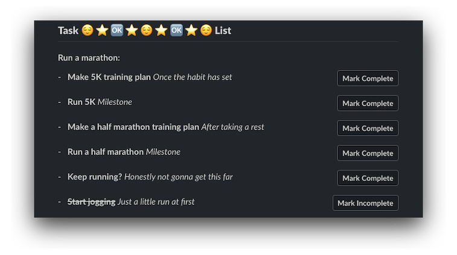

Task List API
An API service to track your goals and tasks. Slack integration allows for easy task display and management as well as notifications when tasks are completed.
A little letter game for your terminal. Try and use all 10 letters!
An API service to track your goals and tasks. Slack integration allows for easy task display and management as well as notifications when tasks are completed.
A little letter game for your terminal. Try and use all 10 letters!